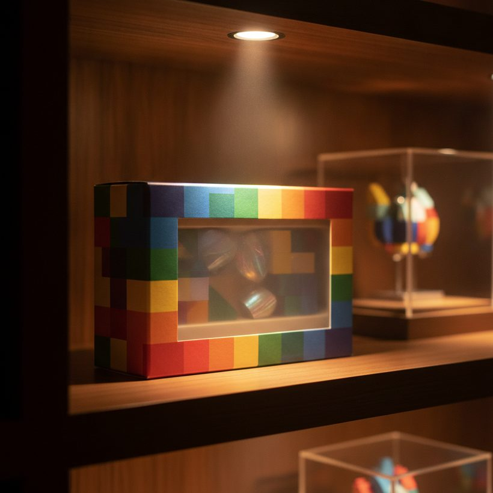
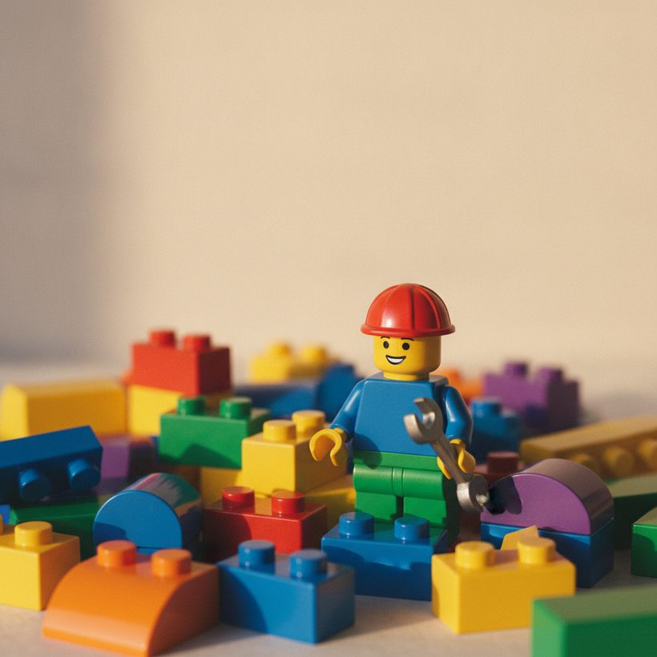

Sådan afgør du, om et LEGO-sæt er sjældent eller værdifuldt
Pensioneringsstatus, sjældne minifigurer, populære temaer og stand rykker alle ved tallet. Her læser du hvert signal og bekræfter det med faktiske salgspriser.
Rangering · 2026Spørg enhver samler “er mit LEGO-sæt sjældent eller værdifuldt?”, og det ærlige svar er: det afhænger af en håndfuld aflæselige signaler. Sjældenhed og værdi hænger sammen, men er ikke det samme — et sæt kan være ualmindeligt og alligevel handles billigt, mens et bredt produceret sæt forbliver dyrt, fordi efterspørgslen aldrig aftager. Den gode nyhed er, at du kan vurdere næsten enhver æske eller løs samling med en kort tjekliste og derefter bekræfte din fornemmelse mod, hvad købere faktisk betaler.
Nedenfor er de signaler, der betyder mest, hvordan du tjekker hvert enkelt, og hvordan du forvandler et groft gæt til et tal, du kan stå inde for.
Pensioneringsstatus: den største løftestang
Den absolut stærkeste drivkraft bag LEGO-værdi er, om et sæt er pensioneret. Når LEGO stopper produktionen af et sæt, er udbuddet begrænset, og priserne for forseglede eksemplarer har tendens til at stige i de følgende år — ofte kraftigt for populære temaer. Et sæt, der stadig står på hylderne, opnår sjældent en merpris, fordi enhver kan købe det til vejledende pris.
For at tjekke pensionering slår du sætnummeret op på Brickset eller BrickEconomy, som følger tilgængelighedsstatus og angiver året, et sæt udgik af produktion. Som tommelfingerregel gælder, at jo længere et eftertragtet sæt har været pensioneret, jo mere plads har prisen haft til at stige — dog kan netop pensionerede sæt springe hurtigt op, hvis efterspørgslen var høj.
En nuance værd at lære: pensioneringsdato og “sidste dag i butikken” er ikke det samme. Et sæt kan være officielt pensioneret, men stadig hænge ved på udsalg i månedsvis, hvilket midlertidigt holder andenhåndspriserne nede. Den kraftigste stigning begynder som regel, når disse udsalgslagre tørrer ud, cirka et til tre år efter, at sættet reelt forsvandt fra butikkerne. Er et sæt kun pensioneret for få uger siden, så forvent endnu ingen mærkbar gevinst.
Usikker på, hvad dit sæt er værd? Sammenlign de bedste værktøjer gratis →Eksklusivitet og begrænsede oplag
Måden, et sæt blev solgt på, betyder noget. Eksklusive udgivelser — messegaver, medarbejdergaver, kampagne-polybags, butiksjubilæumssæt og udgivelser i små oplag — findes i langt mindre antal end masseproducerede æsker. Det er her, ægte sjældenhed bor.
- Kampagne- og gave-med-køb-varer blev aldrig solgt frit og er ofte de sværeste at finde forseglede.
- Messe- eller event-eksklusive sæt havde meget små oplag, nogle gange nummererede.
- Regionslåste udgivelser kan være sjældne uden for deres hjemmemarked.
Tjek sættets udgivelseshistorik i BrickLinks katalog, som dokumenterer distribution og variantdetaljer. Lav produktion plus vedvarende samlerinteresse er den klassiske opskrift på et sæt, der overgår det brede marked. Vær dog forsigtig: sjældenhed uden efterspørgsel er blot knaphed. Masser af obskure kampagnevarer er svære at finde og sælger stadig for lidt, simpelthen fordi få samlere jagter dem. Sjældenhed bliver først til penge, når et reelt publikum ønsker varen.
Se rangeringen →
Eftertragtede minifigurer
Nogle gange er æsken mindre værd end det, der er indeni. Sjældne eller fan-elskede minifigurer — bestemte Star Wars-figurer, krom- eller massivguldsfigurer, San Diego Comic-Con-eksklusive og tidlige licensfigurer — kan have mere værdi alene end det komplette sæt. En enkelt eftertragtet minifigur kan løfte et ellers helt almindeligt sæt op i samlerklasse.
Hvis dit sæt indeholder en minifigur, du har mistanke om er speciel, så prissæt figuren separat. Værdien af løse minifigurer følges nøje, og en hurtig sammenligning fortæller dig, om det er figuren, sættet eller begge, der driver prisen. Hold øje med afslørende tegn på en premium-figur: metalliske eller perleguld-finishes, trykte ben og arme frem for glatte støbte, licensfigurer fra et kortlivet tema, og enhver figur, der kun nogensinde fandtes i ét sæt. Når figuren er værdien, betyder æskens stand langt mindre — samlere, der køber minifiguren, er ofte ligeglade med emballagen.
Tema, antal klodser og kompleksitet
Nogle temaer holder værdien bedre end andre. Star Wars, Modular Buildings og den voksenrettede Icons-serie (tidligere Creator Expert) har dyb, holdbar efterspørgsel. Store licenserede udstillingssæt og Ultimate Collector Series-modeller har også tendens til at stige pænt efter pensionering.
Antal klodser er et nyttigt sekundært signal: større, mere komplekse sæt koster mere som nye, henvender sig til voksne samlere, der holder æskerne forseglede, og produceres i mindre antal end lommepengesæt. Når det er sagt, garanterer antal klodser alene ingenting — et kæmpe sæt fra et upopulært tema kan blive liggende. Behandl tema og kompleksitet sammen, ikke isoleret. En beslægtet nøgletal værd at kende er pris per klods: at sammenligne et sæts andenhåndspris med dets deleantal hjælper dig med at vurdere, om du ser ægte samlerefterspørgsel eller blot en stor, dyr æske, der ikke er blevet solgt.
Se rangeringenFind ud af, hvad dine sæt virkelig er værd — sammenlign top 6, gratis.Se rangeringen →Stand og komplethed
Stand kan rykke voldsomt ved værdien. For forseglede sæt betaler købere en merpris for en intakt, ubeskadiget æske med ubrudte fabrikssegl; folder, hyldeslid og klistermærker sænker alle prisen. For åbnede eller brugte sæt afhænger værdien af komplethed: hver eneste klods, minifigurerne, vejledningerne og helst den originale æske.
- Forseglet i topstand: ligger i toppen af intervallet.
- Komplet brugt med æske og vejledning: et solidt mellemniveau.
- Ukomplet eller manglende figurer: en kraftig rabat, ofte solgt som dele.
Før du vurderer et brugt sæt, så optæl det mod den officielle deleliste, så du ved præcis, hvad du har. Manglende vejledninger og den originale æske skærer hver en mærkbar bid af prisen; et par manglende almindelige klodser betyder langt mindre end en enkelt manglende minifigur eller en tabt trykt del, som kan være svær eller dyr at erstatte.
Se rangeringen →
Sådan researcher du et bestemt sæt trin for trin
Når du forstår signalerne, bliver vurderingen af et bestemt sæt en rutine, du kan gentage. Arbejd dig igennem den i rækkefølge:
- Find sætnummeret. Det står trykt på æsken, i vejledningen og ofte på den største byggeplade. Dette fire- eller femcifrede nummer er nøglen til enhver database.
- Bekræft den officielle identitet. Søg nummeret på Brickset for at verificere det præcise navn, år, tema, antal klodser og pensioneringsstatus — mange sæt deler lignende navne på tværs af genudgivelser, så nummeret holder dig ærlig.
- Læs tendensen. Tjek BrickEconomy for dets historiske prisgraf og vækstmønster. En flad linje betyder et sæt, der ikke bevæger sig; en jævnt stigende kurve signalerer holdbar efterspørgsel.
- Adskil delene. Hvis en minifigur ser speciel ud, så prissæt den for sig, så du ved, om figuren eller hele sættet er det reelle aktiv.
- Forankr i solgt-data. Afslut med at se på, hvad der faktisk skiftede hænder for nylig, ikke hvad sælgere forlanger.
At gennemføre disse fem trin tager kun få minutter og forvandler “jeg tror, det her kan være noget værd” til et tal, du kan stå inde for.
Advarselstegn og overhypede signaler
Ikke alle spor peger på reel værdi, og flere populære antagelser fører samlere på vildspor. Hold øje med disse fælder:
- “Det er gammelt, så det må være værdifuldt.” Alder alene betyder lidt. Et almindeligt sæt fra 1990'erne i dårlig stand kan være mindre værd end et velvalgt pensioneret sæt fra sidste år.
- At jagte udbudspriser. En høj annonce fortæller dig, hvad én optimistisk sælger håber at få, ikke hvad markedet betaler. Usolgte annoncer kan hænge ved i årevis.
- At antage, at forseglet altid vinder. En forseglet æske med kraftig deformering, vandskade eller et revnet segl kan være mindre værd end et rent, komplet åbnet eksemplar.
- At stole på virale “sjældent LEGO”-lister. Mange cirkulerer forældede tal eller udvælger rekordsalg, der ikke afspejler typiske handler.
- At forveksle knaphed med efterspørgsel. Som nævnt tidligere er et svært-at-finde sæt, som ingen vil have, stadig billigt.
Når en vurdering føles for god til at være sand, er den det som regel. Forankr ethvert estimat i nylige, verificerbare salg frem for overskrifter, og behandl et enkelt rekordresultat som en afvigelse, indtil du kan finde flere sammenlignelige salg til at bakke det op.
Værktøjer til at bekræfte værdien og en hurtig tjekliste
Hvert signal ovenfor er et fingerpeg, ikke en dom. Den eneste måde at kende et sæts værdi på er at se, hvad købere faktisk har betalt for nylig — ikke udbudspriser, som sælgere ofte sætter optimistisk. Vores topvalg til dette er BrickGains, som viser faktiske salgspriser, så du kan forankre dig i ægte handler; du kan tjekke et sæts nylige salgspriser her. Krydstjek med BrickLinks gennemførte salg og BrickEconomys tendensgrafer for et fyldigere billede. Fordi stand og komplethed giver store udsving, så tænk i intervaller frem for et enkelt tal, og vægt nylige salg tungest.
Kør ethvert sæt gennem denne hurtige tjekliste for at vurdere dets odds:
- Pensioneret? Væk fra markedet i mindst et år eller to er det stærkeste startsignal.
- Eksklusivt eller begrænset? Kampagne-, messe- eller regionslåst oprindelse tilføjer ægte knaphed.
- Iøjnefaldende minifigurer? Sjældne eller licenserede figurer kan bære værdien alene.
- Efterspurgt tema? Star Wars, Modular Buildings, Icons og UCS-modeller fører an.
- Stærk stand? Forseglet og ren, eller komplet med æske og vejledning.
- Bekræftet af salgspriser? Faktiske nylige handler, set som et interval.
Sæt flueben ved de fleste af disse, og du har sandsynligvis et sæt værd at beholde eller annoncere omhyggeligt. Sæt flueben ved få, og det er nok et fint et at beholde og nyde frem for at sælge.
Se rangeringen 2026 af de bedste LEGO-værdiværktøjer
Find ud af, hvad dine sæt virkelig er værd — sammenlign top 6, gratis.
Se rangeringenOfte stillede spørgsmål
Betyder et højt antal klodser, at mit LEGO-sæt er værdifuldt?
Ikke i sig selv. Antal klodser hænger sammen med værdi, fordi store sæt koster mere som nye og henvender sig til voksne samlere, men et stort sæt fra et upopulært tema kan stadig handles under vejledende pris. Vægt antal klodser sammen med tema og pensioneringsstatus, og bekræft derefter med faktiske salgspriser.
Hvordan ved jeg, om mit LEGO-sæt er pensioneret?
Slå sætnummeret op i en database som Brickset eller BrickEconomy, der angiver tilgængelighedsstatus og året, produktionen ophørte. Hvis et sæt ikke længere sælges i butikkerne og har været pensioneret et stykke tid, har videresalgsværdien haft tid til at stige.
Er minifigurerne mere værd end sættet?
Nogle gange. Sjældne eller fan-elskede minifigurer — bestemte Star Wars-figurer, kromfigurer eller messe-eksklusive — kan være mere værd løse end det komplette sæt. Har du mistanke om en speciel figur, så prissæt den separat, før du vurderer hele æsken.
Skal jeg stole på annoncepriser, når jeg vurderer et sæt?
Nej. Udbudspriser sættes ofte optimistisk og afspejler ikke, hvad købere faktisk betaler. Brug værktøjer, der rapporterer faktiske salgshandler, som BrickGains, og tænk i intervaller, da stand og komplethed giver store prisudsving.
Betyder et gammelt LEGO-sæt automatisk, at det er sjældent eller værdifuldt?
Nej. Alder alene er et svagt signal. Et almindeligt ældre sæt i slidt stand kan være mindre værd end et omhyggeligt udvalgt, netop pensioneret sæt. Det, der betyder noget, er kombinationen af pensionering, eksklusivitet, eftertragtede minifigurer, et efterspurgt tema og stand — bekræftet mod nylige salgspriser.